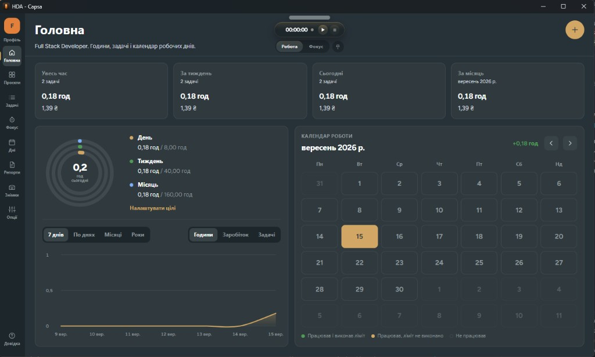
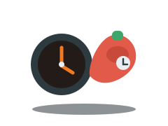

Таймер у треї
Лічильник живе в головному процесі. Вікно можна сховати — сесія не зупиняється. Є острів і окреме міні-вікно.
Капсула часу
Capsa рахує час локально: профілі, задачі, таймер у треї, помодоро й PDF-репорти. Хмари немає.
Спочатку Windows. macOS і Linux — пізніше.

Той самий спокій, що в додатку: темний інтерфейс, помаранчевий акцент і база, яка нікуди не їде.
Лічильник живе в головному процесі. Вікно можна сховати — сесія не зупиняється. Є острів і окреме міні-вікно.
Окремі світи роботи: свої проєкти, задачі й ціна години. Усюди гривня. Проєкт може перевизначити ставку профілю.
Окремий зворотний таймер: робота рахує гроші, фокус тримає ритм. Можна від’єднати острів у плаваюче вікно.
Дні, години й суми по проєктах. Пауза при простої, якщо за комп’ютером ніхто не працює.
Прев’ю в додатку і збереження файлу. Зручно віддати клієнту години й нарахування без хмарного акаунта.
SQLite на комп’ютері, автокопія поруч. Скріншоти сесії — лише якщо увімкнути, у папку Зображення.
Закриття ховає Capsa в трей. Повний вихід — з меню іконки. Острів коротко підказує простій, щогодинні позначки й норму дня.
Профіль тримає свої ставки, проєкти, знімки й репорти. Зручно розділити розробку, дизайн і підробіток.
Фокус не дублює робочий таймер. Якщо острів уже крутиться, завершений помодоро не пише другий рядок у історію.

Поки таймер іде, Capsa може знімати екран з обраним інтервалом. На паузі кадрів немає. Якщо вимкнути опцію, таймер працює як завжди.
Записи лишаються в SQLite на цьому комп’ютері. Немає хмарного акаунта і фонової відправки на сторонні сервери.
Так само, як у розділі Довідка в додатку.
У локальній базі SQLite. На Windows це %APPDATA%/Capsa/tracker.db, поруч автокопія tracker.db.bak. Хмарний акаунт не потрібен.
Ні. Трекер, таймер, календар і репорти працюють офлайн. Capsa не відправляє записи в мережу.
У гривнях за ефективною ставкою проєкту або профілю. Якщо в проєкті ставка порожня, береться профіль.
Якщо опцію увімкнено — у папку Зображення/HDA - Capsa, підпапки по датах. На паузі знімки не робляться.
Закриття ховає додаток у трей, щоб таймер жив далі. Повний вихід — з меню іконки в треї.
Ні. Немає магазинної підписки й внутрішніх покупок. Capsa — локальний десктопний додаток; платформи з’являться, коли збірка буде готова.
Збірка вже вміє Windows, macOS і Linux. Публічний реліз — спочатку Windows. macOS і Linux пізніше, без вигаданих посилань на магазини.
Capsa збирається як десктопний додаток. Інсталятор для Windows з’явиться тут, коли буде готовий. macOS і Linux — наступними.
Інсталятор незабаром
У планах, не зараз
AppImage / deb — пізніше